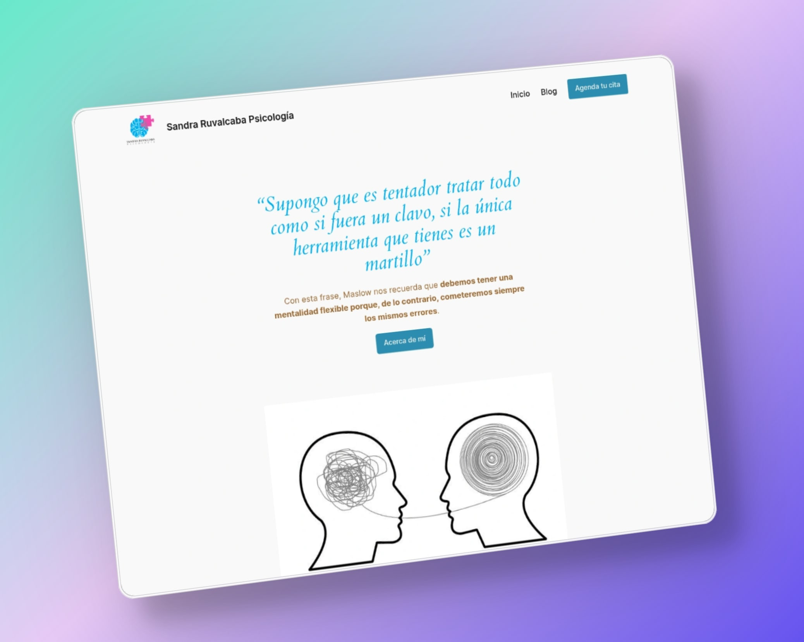
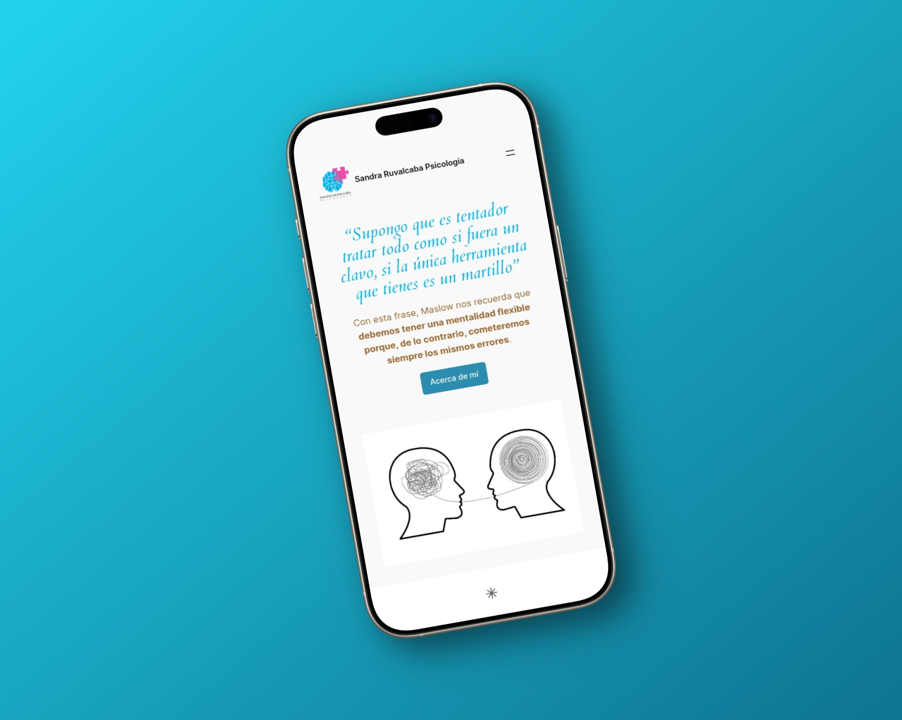
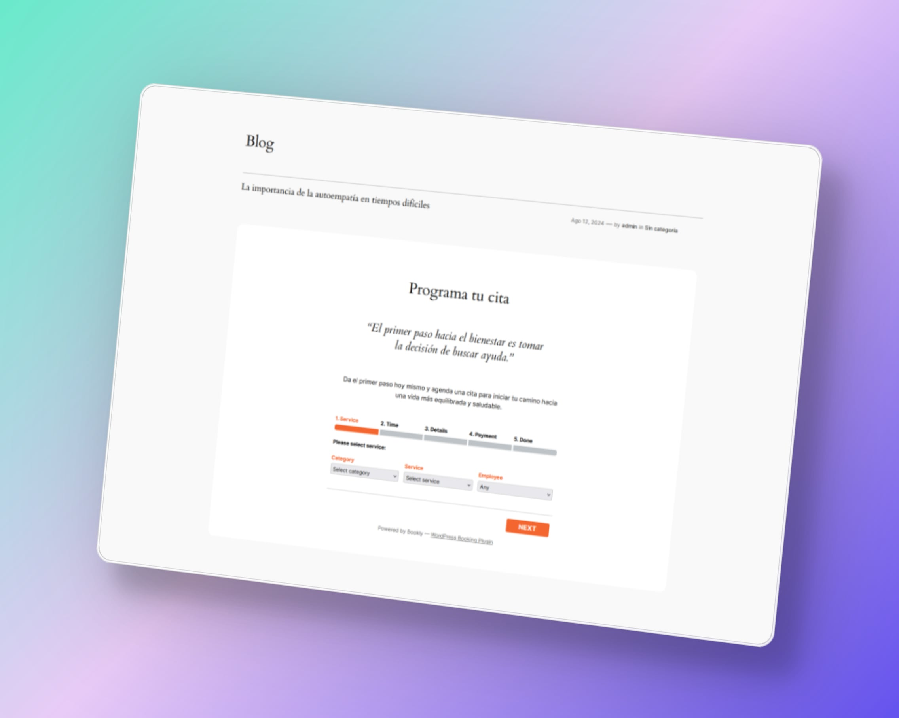

Sandra Ruvalcaba
Sitio web para psicóloga clínica
El proyecto en dos líneas
Sandra Ruvalcaba es psicóloga clínica en Guadalajara con especialidad en terapia individual, parejas y orientación educativa. Necesitaba un sitio web que generara confianza desde el primer segundo y que convirtiera visitantes en pacientes.
El problema concreto
Cuando alguien busca un psicólogo, está en un estado vulnerable. La decisión de contactar a alguien o no depende casi completamente de la percepción de confianza que genera el primer contacto digital. La mayoría de los sitios de psicólogos son genéricos, impersonales o directamente desactualizados. Teníamos que hacer lo contrario.
Proceso y decisiones clave
Empecé por definir el objetivo principal del sitio: lograr que el visitante la contacte. Todo lo demás es secundario. Con eso claro, tomé tres decisiones importantes:
- Fotografía prominente y cálida — La foto de Sandra aparece en el hero, en una postura abierta y amigable. Generamos confianza con la cara, no solo con el texto.
- Especialidades muy claras desde el inicio — Eliminé toda la jerga psicológica y presenté los servicios en el lenguaje que usa alguien que busca ayuda, no el de un expediente clínico.
- CTA visible en cada sección — El botón de contacto aparece en la barra de navegación, al final de cada sección y en la página completa de contacto. Cero fricción.
Galería




Impacto y resultados
Desde el lanzamiento del nuevo sitio, Sandra reportó un aumento notable en las solicitudes de primera consulta a través de la web. Los pacientes mencionaban que la página "se veía profesional" y les daba confianza para dar el primer paso — que es justamente lo más difícil en el proceso de buscar atención psicológica.
Lo que aprendí
Este proyecto me confirmó que el diseño de sitios para profesionales de la salud mental es radicalmente diferente al de un e-commerce o una startup. Aquí, cada elemento de diseño tiene que hacer una sola cosa: generar confianza. Aprendí a subordinar todo lo demás a ese objetivo único.